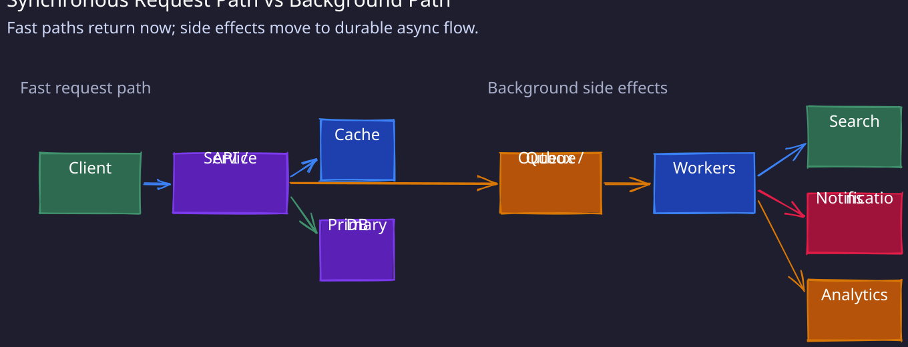
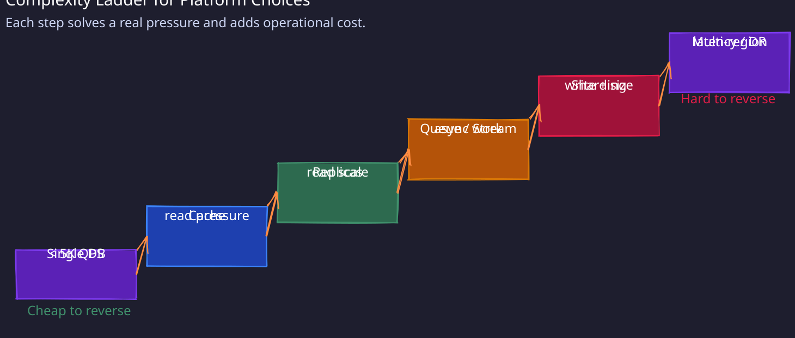

1. Cache Systems (Redis / Memcached / CDN)

FISH
- Fallback when cache fails - Implement circuit breakers to fall back to database when cache is down/slow; This ensure system works even if with higher latency. This also gives cache time to recover.
- Invalidation strategy - This is to invalidate and update cached data in case of updated/deletion in DB. Use write-through for consistency (update cache + DB together), write-back for performance (cache first, DB async), or write-around (DB only, cache is filled in next request) to avoid cache pollution.
- Stampede prevention - Use distributed locks (first request to notice the cache is empty acquires a lock, fetches from the database, populates the cache, other requests wait for lock to be released) or request coalescing (smart cache detects same request, make single DB call, shares result with all requests) to prevent multiple requests from simultaneously fetching the same expired key from DB.
- Hot key handling - Replicate hot keys across multiple cache nodes or use client-side caching for frequently accessed data.
2. Messaging / Streaming (Kafka, Pulsar, SQS)
PAIRED
- Partition key strategy - Use entity ID as key for ordering within entity; use null/random key for maximum parallelism when order doesn’t matter.
- At-least-once vs exactly-once - Prefer to use at-least-once with idempotent consumers (cheaper, simpler). Use exactly-once only when duplicates are unacceptable and worth the complexity/cost.
- Idempotency - Use natural dedup key from message (event_id, request_id), store processed IDs in Redis to check for duplicate requests, keep redis TTL matching max allowed window in which event might be replayed. Prefer idempotent operations (upserts, final-state writes) over delta operations.
- Rebalancing (consumer groups) - Adding or removing consumers triggers a rebalance that pauses all consumption in the group until complete. With large state (e.g., Kafka Streams local stores), rebalancing can take minutes. Mitigate with cooperative sticky rebalancing (incremental reassignment, no stop-the-world) and static group membership (fixed member IDs so restarts don’t trigger rebalance). Monitor consumer lag during rebalances — silent data delays are common.
- Evolution (schema) - Message formats will change; plan for it upfront. Use a schema registry (Confluent) with Avro or Protobuf — not raw JSON. Enforce backward compatibility (new consumers can read old messages) as the default mode. For breaking changes, use a new topic rather than versioning within the same topic. Without this, producer upgrades silently break downstream consumers.
- Dead Letter Queue & Poison Message - Route failed messages to DLQ after N retries; monitor DLQ size and have runbooks for manual intervention. Catch Poison message (serialization errors, invalid json) separately, skip them or route to DLQ to prevent blocking entire partition.
3. Database Design (SQL / NoSQL)
SCRIPTS
- Sharding strategy - Shard by tenant ID, user ID, or geographic region; use consistent hashing to minimize resharding when adding nodes. Hot partitions from low-cardinality keys are the most common mistake — add randomization suffix to hot keys, cache hot records, or split hot partitions into sub-partitions.
- Consistency (replication lag) - Read from primary for user’s own writes; use async replicas for other reads; monitor replication lag and alert if >1 second.
- Read/write pattern forecasting - Design tables around access patterns, not just entities; denormalize for read-heavy workloads, normalize for write-heavy workloads.
- Index strategy - Create indexes for read patterns but be aware each index adds write overhead; typically 3-5 indexes max per table. Composite indexes follow the leftmost prefix rule — order columns by selectivity. Monitor for unused indexes (they cost writes for zero benefit) and missing indexes (slow queries hitting sequential scans).
- Pooling Connections - Every connection holds memory on the DB server (~5-10MB for Postgres). Without pooling, microservices with many instances exhaust
max_connectionsfast. Use Connection Pooling (PgBouncer, ProxySQL) in transaction mode — connections are returned to the pool after each transaction, not held per session. Set pool size per service based on expected concurrency; monitor for pool exhaustion (requests waiting for a connection) as an early warning of scaling limits. - Transaction isolation - Use Read Committed for most cases; use Serializable only when race conditions are unacceptable; understand phantom read risks.
- Schema migration (zero-downtime) - Never run locking DDL (e.g.,
ALTER TABLE ... ADD COLUMNwith default on large tables) during traffic. Use the expand-and-contract pattern: add new column as nullable → backfill in batches → migrate reads → drop old column. For large tables, use online DDL tools (gh-ost, pt-online-schema-change) that copy-and-swap without holding locks. Always test migrations against production-sized data — a migration that takes 2 seconds on staging can lock for 20 minutes on prod.
4. API & Service Design
RIVET
-
Rate Limiting & Throttling
- Token bucket (allows bursts) vs leaky bucket (smooths traffic) — pick based on whether you want to permit short bursts. See rate limiting algorithms for details
- The juicy nuance: rate limit at multiple levels — per user, per tenant, per endpoint — a single global limit is too coarse
- Return
429withRetry-Afterheader; never just drop the request silently - Enforce at the gateway layer, not inside individual services — otherwise every service reimplements it inconsistently
-
Idempotency for Mutating Operations
- Require idempotency keys for all
POST/PUToperations; storekey → resultfor 24 hours - The sharp point: same key must always return the same response — don’t reprocess and return a different result on replay
- If the original request is still in-flight when a duplicate arrives, return 409 or block — don’t process twice
- Require idempotency keys for all
-
Versioning & Backward Compatibility
- Never remove fields or change field types in existing versions — additive changes only
- New optional fields are safe; breaking changes get a new endpoint version (
/v2/) - The operational point most miss: have a deprecation timeline — announce sunset, monitor usage of old version, hard-cut only when traffic drops to zero
-
Error Contracts
- Every error response needs a consistent schema:
{ code, message, trace_id }— trace_id is critical so clients can correlate with your logs - Never leak stack traces or internal details in error responses — that’s a security surface
- Distinguish cleanly:
4xx= client’s fault (don’t retry),5xx= server’s fault (safe to retry) — clients need this signal to behave correctly
- Every error response needs a consistent schema:
-
Timeouts, Retries & Pagination
- Set aggressive client timeouts (3–5s for APIs) — without them, one slow dependency stalls your thread pool
- Retry only idempotent operations with exponential backoff + jitter; never retry non-idempotent calls blindly
- For pagination: cursor-based over offset-based — offset breaks when rows are inserted or deleted mid-pagination; cursor is stable and scales better for large datasets
5. Distributed Systems / Microservices
DISCO
- Data sync to Other Service -
- Avoid dual-write to DB and message queue (partial failure risk). Prefer transactional outbox (write kafka message to separate table in the same DB transaction, use separate async process to publish these events to queue)
- Alternatively use CDC (Debezium) to capture DB changes as events; this gives at-least-once delivery without distributed transactions.
- Idempotency at service boundaries - Every service must handle duplicate calls; use idempotency keys passed from upstream; store request fingerprint → response for replay; make downstream calls idempotent or use saga compensation; critical for retries across network boundaries.
- Saga for distributed transactions - Choreography (event-driven, services react independently) for simple flows ≤3 steps. Use orchestration (central coordinator) for complex flows needing visibility and compensation. Always design compensating actions upfront.
- Circuit Breaker for Fault Isolation -
- Open circuit after N failures or error rate threshold; make it half-open after cooldown to probe recovery
- Bulkheads isolate thread pools per dependency to prevent cascade failures, combine with timeouts (fail fast) and retries (with jitter) for defense in depth;
- Degrade gracefully by serving stale data, skip non-critical features.
- Observability & tracing -
- Keep structured logging with trace id. Propagate correlation ID (trace-id) across all service calls and async messages
- Use distributed tracing (Jaeger, Zipkin) to visualize request flow
- Instrument golden signals (latency, traffic, errors, saturation) per service
- Trigger alert on p99 latency not just averages.
6. Concurrency & Locking
OLD
- Optimistic vs pessimistic locking - Use optimistic (version number check / Compare-And-Swap) for low contention workflows. Use pessimistic locking using
(SELECT ... FOR UPDATE)for high contention or critical sections. - Lock granularity - Prefer the narrowest lock that preserves correctness (row/key > range > table). Keep lock hold time short; avoid locking around network calls. For cross-process coordination, prefer designs that avoid locks; if unavoidable, use lease-based locks with fencing tokens.
- Deadlock avoidance - Always acquire locks in consistent order; use lock timeouts; keep transactions short (<100ms); retry safely with exponential backoff and jitter when deadlocks occur.
- Distributed locking caveats - If you need strong correctness, prefer a consensus-backed system (e.g., ZooKeeper/etcd). Redis based locks can be availability-oriented and require careful handling of partitions, TTL expiry, and stale lock holders.
7. Blob Storage (S3)
CLAMP
- Consistency model - S3 is strongly consistent for read-after-write for new objects, overwrites, and deletes. Still design for timeouts/retries, and use versioning/ETags (or conditional writes) to avoid lost updates when multiple writers race.
- Lifecycle policy - Transition to infrequent access after 30 days (cheaper but has retrieval fees). AWS Glacier after 90 days (cheap but retrievals take hours), and delete after retention period. Automate with lifecycle policies.
- Access pattern optimization - Use CloudFront CDN for read-heavy workloads. Use “S3 Transfer Acceleration” for global uploads.
- Multipart upload optimization - Use multipart upload for files >100MB; parallelize uploads; handle partial upload cleanup with abort incomplete uploads policy.
- Presigned URL - Generate server-side with short TTL (5-15 min); enables direct client-to-S3 transfer bypassing your servers (saves bandwidth, reduces latency); scope to specific operation (GET/PUT) and object key; for uploads, use POST policies to enforce content-type and size limits.
8. Sharding Operations

SHARDS
-
Shard Key Design
- The most critical upfront decision — everything else flows from this
- Bad key = hot partition (e.g.
country_code,created_at, or any low-cardinality field) - Watch for celebrity/whale problem: if 1% of users generate 80% of traffic,
user_idalone can still hotspot - Fix: composite key or hash the shard key to distribute artificially
-
Hotspot Detection & Rebalancing
- Track QPS, latency, and storage per shard independently — aggregate metrics hide skew
- Alert on shard skew >20%
- Use consistent hashing so adding a shard only moves
1/Nof data, not a full reshuffle - Plan rebalancing in low-traffic windows with backpressure to avoid overwhelming the target shard
-
Atomicity is Shard-Scoped
- Atomic guarantees only exist within a single shard — this is the hard constraint to design around
- Cross-shard transactions via 2PC exist but avoid them — blocking protocol, coordinator failure stalls everything
- Better answer: restructure data model to co-locate related data on same shard; use Saga pattern for flows that genuinely span shards
-
Routing Layer
- The routing metadata itself is a single point of failure — so cache shard mappings locally with TTL rather than hitting the mapping service on every request
- Implement via proxy (Vitess, ProxySQL) or application-level lookup
- Never hardcode shard assignments; handle stale cache with retry + refresh on miss
-
Dual-Write Migration
- Safe sequence: write to old + new → backfill historical data in rate-limited batches → feature flag to shift reads → validate → deprecate old path
- Never do a hard cutover; always have rollback available until validation window closes
-
Scatter-Gather for Cross-Shard Queries
- Avoid cross-shard joins — denormalize to prevent them in the first place
- If unavoidable: parallel reads with per-shard timeout, aggregate in application layer
- Cap fan-out (e.g. max 10 shards) to bound tail latency — unbounded fan-out is a latency timebomb
9. Elasticsearch
CRIMPS
- Cache
- Use a distributed cache (Redis) for repeated search queries; results can be slightly stale.
- CDN is a secondary layer only for cacheable public search responses, not the primary answer.
- Replicas
- Same index served from multiple replica copies.
- Helps scale read throughput horizontally.
- Ingestion / CDC Pipeline
- Search index is not the source of truth; it is derived from a primary authoritative store.
- Index updates come via an ingestion pipeline or Change Data Capture (CDC).
- Mapping & schema design
- Choose field types carefully upfront — keyword for exact match/filtering/aggregation, text for full-text search. Wrong choice means either broken queries or wasted resources.
- Avoid nested types unless you genuinely need per-object filtering within arrays — nested queries are expensive (each nested doc is internally a separate Lucene document). Prefer flattened or denormalized fields where possible.
- Mapping changes on existing fields require a full reindex — you cannot change a field from
texttokeywordin place. This makes the initial mapping decision high-stakes at scale.
- Partitioning into Hot/Cold Tiers
- Hot indexes: fast local storage for recent or frequently queried data.
- Cold indexes: cheaper blob storage (e.g., S3) with a slower fallback query path.
- Core idea: align storage cost with query frequency.
- Shard sizing & reindex strategy
- Target 10-50GB per shard — too small creates overhead (each shard is a Lucene index with its own file handles and memory), too large slows recovery and search latency.
- Start with number of primary shards = number of data nodes and scale from there; you cannot change primary shard count on an existing index.
- For schema changes or shard count adjustments, use blue-green reindexing: create a new index with the updated mapping, reindex data into it, then swap the alias atomically. At scale, reindexing takes hours — plan for it to run in the background with rate limiting (
requests_per_second) to avoid starving production queries.
10. Long-Lived Push Connections (WebSocket / SSE)
WebSocket and Server-Sent Events (SSE) solve the same shape of problem: keep a TCP connection open so the server can push events the moment they happen, instead of clients polling. They’re two transports for the same operational pattern, and the engineering concerns below apply equally to both — only the mechanism differs.
Pick the transport first:
- WebSocket — true bidirectional, low-latency, framed messaging. Use when the client also pushes (chat with typing indicators, collaborative editing, multiplayer games, presence).
- SSE — one-way server→client over plain HTTP/2, with reconnect and replay cursor built into the protocol. Use when fan-out is server-driven (notifications, live feeds, dashboards, log tails, model streaming). Client→server traffic, when needed, goes over normal HTTP requests alongside the SSE stream.
SHARP
- Stateful Scaling
- Problem: a push connection is pinned to whichever server accepted it; you can’t freely add nodes or route a message to “the user” without knowing which server holds them
- Solution: put a pub/sub broker (Redis Pub/Sub / Kafka) between app servers so any node can publish, and the node holding the connection delivers; keep a lightweight connection registry (user_id → server_id) in Redis if you need targeted delivery
- Heartbeats
- Problem: silent disconnects — the TCP connection looks alive but is dead, and idle intermediaries (load balancers, proxies, NATs) will drop a quiet connection within minutes
- Solution: send a keepalive on a fixed interval (15–30s) and treat missing responses as a dead connection — evict server-side and reclaim resources
- Mechanism: WebSocket uses ping/pong control frames (bidirectional liveness check); SSE has no frames, so the server emits a comment line (
: keepalive\n\n) to keep the path warm and relies on the browser’s auto-reconnect to recover dead links
- Authentication
- Problem: auth is verified once at connection setup, but the connection outlives the token’s expiry — a session valid for hours sitting on a 15-minute JWT
- Solution: validate the credential at handshake, track token expiry server-side, and force disconnect (or re-auth) when the token expires mid-session; never treat the live connection as implicit proof of identity
- Mechanism: WebSocket can carry the token in the upgrade request header or first frame; SSE typically rides on session cookies because the browser’s
EventSourceAPI cannot set custom headers
- Reconnection & Message Replay
- Problem: the client drops and reconnects — any messages sent during the gap are lost unless the server can replay from a cursor
- Solution: tag every message with a monotonic sequence ID, persist recent messages in a durable store (Kafka, Redis Streams, Cassandra), and on reconnect have the client send its last-seen ID so the server can replay the gap; reconnect with exponential backoff to avoid thundering herds during outages
- Mechanism: WebSocket clients implement reconnect + cursor tracking in application code; SSE gets this from the protocol — the server emits
id:per event, the browser auto-reconnects and sendsLast-Event-IDback, andretry:controls the backoff. Either way you still need the durable store; the protocol only carries the cursor, not the messages
- Persistence for Offline Users
- Problem: if the recipient isn’t connected when the event fires, or the consumer server was down/getting-deployed, the message is dropped on the floor
- Solution: queue undelivered messages keyed by recipient and flush them on reconnect; for longer offline windows (hours to days), fall back to a persistent store (Cassandra, Postgres) with a TTL that matches your retention policy; the live connection becomes an optimization on top of durable storage, not the source of truth
- Broker choice: prefer Redis Streams over Redis Pub/Sub for the queue hop — Pub/Sub is fire-and-forget and drops in-flight messages during broker or consumer restarts, while Streams keeps an append-only log with consumer-group acks (
XACK) and lets a restarted/replacement consumer replay from its last offset. Pub/Sub is still fine for purely ephemeral signals (presence, typing) where loss is a non-event.
11. Cassandra
ADAPT
- Atomicity is Partition-Scoped Only
- Cassandra guarantees atomic writes within a single partition — all columns in one partition_key row are written together or not at all
- Cross-partition atomicity does not exist — this is a hard constraint you must design around
- For CAS operations (e.g. “insert only if not exists”), Cassandra offers Lightweight Transactions (LWT) via Paxos
- But LWT is expensive — 4 network round trips per operation — so treat it as a last resort, not a default
- Interview signal: “I’d restructure the data model to avoid cross-partition writes before reaching for LWT”
- Denormalization is Not Optional
- No joins means you duplicate data intentionally across multiple tables — one table per access pattern
- This feels wrong at first but is the correct approach; fighting it leads to bad performance
- The real interview trap: if your use case requires flexible querying (ad-hoc filters, aggregations), Cassandra is the wrong choice — mention Elasticsearch or a secondary index instead
- AP by Default, but Consistency is Tunable
- Cassandra is AP in CAP — availability over consistency by default
- But strong consistency is achievable: W + R > N (e.g. RF=3, QUORUM writes + QUORUM reads)
- The juicy nuance: you can tune per query, so hot paths can use QUORUM while background jobs use ONE
- Tradeoff worth stating: stronger consistency narrows the gap with a relational DB but removes Cassandra’s latency advantage
- Partition Key Design is Everything
- Bad partition key = hot partition — one node absorbs all the traffic while others sit idle, defeating the whole purpose of distributed writes
- Good partition key = high cardinality, evenly distributed (e.g. user_id, not country_code)
- Watch out for time-based partition keys — if you partition by day, today’s partition gets hammered while yesterday’s is cold. Fix: composite key like
(user_id, date)to spread the load
- TTL as a First-Class Design Primitive
- TTL in Cassandra is not just a cleanup tool — it’s a design choice you lean into
- For messages, sessions, rate-limit windows, or any data with a natural expiry, TTL auto-expires cleanly without needing a delete pipeline
- This sidesteps the tombstone problem entirely and is the signal that you know Cassandra’s grain
12. Flink
FLINK
-
Fault Tolerance via Checkpointing
- Flink snapshots operator state periodically to durable storage (S3/HDFS) using Chandy-Lamport distributed snapshots
- On failure, job restarts from last successful checkpoint — exactly-once guaranteed
- The juicy tradeoff: checkpoint interval vs throughput vs recovery time
- Frequent checkpoints = faster recovery but adds I/O pressure and reduces throughput
- Tune checkpoint interval based on your recovery SLA, not arbitrarily
- Savepoints are manually triggered checkpoints for planned upgrades or job migrations — distinct from automatic checkpoints, most candidates conflate the two
-
Late Data & Watermarks
- Out-of-order events are inevitable in real systems — mobile clients, retries, network jitter
- Flink uses watermarks to track event-time progress: watermark
Tmeans “no event with timestamp < T will arrive” - You control allowed lateness — too tight = real data dropped; too loose = state held in memory too long
- Late events beyond the window are either dropped or routed to a side output for separate handling — always mention side outputs, most candidates silently drop late events and move on
-
Internal State & TTL
- Operator state lives in RocksDB (spills to disk) for large state or heap for low-latency small state
- State is partitioned by key — all events with the same key route to the same operator instance; key cardinality directly affects parallelism ceiling
- The trap: unbounded keyed state with no TTL will OOM or bloat checkpoints — always set state TTL for any keyed state that doesn’t naturally expire
-
Non-trivial Windowing
- Don’t just say “I’ll use a window” — say which and why:
- Tumbling — fixed non-overlapping buckets; cheap, good for periodic aggregates
- Sliding — overlapping; expensive because each event belongs to multiple windows simultaneously
- Session — gap-based, closes after inactivity; natural fit for user behavior analytics
- The interview trap: candidates default to tumbling for everything — calling out session windows for user-centric pipelines signals real understanding
- Don’t just say “I’ll use a window” — say which and why:
-
(Back)pressure Propagation & Scaling
- Flink propagates backpressure upstream through network buffers all the way to the source — if a sink slows down, Flink naturally throttles consumption rather than buffering in memory
- This is native and automatic — unlike Spark Streaming where you manage this manually
- For scaling: Flink parallelism is set per operator — you can scale a bottleneck operator independently without scaling the whole job
- Watch for data skew on keyed streams — if one key dominates (e.g. a viral user), that operator instance becomes a hotspot; fix with key salting or local pre-aggregation before the keyed operation
13. Index
- Cache → FISH (Fallback, Invalidation, Stampede, Hot keys)
- Messaging → PAIRED (Partition, At-least-once, Idempotency, Rebalancing, Evolution, Dead Letter Queue)
- Database → SCRIPTS (Sharding, Consistency, Read/write patterns, Index, Pooling, Transaction, Schema migration)
- API → RIVET (Rate limiting, Idempotency, Versioning, Error contracts, Timeouts)
- Distributed Systems → DISCO (Data sync, Idempotency, Saga, Circuit breaker, Observability)
- Locking → OLD (Optimistic vs pessimistic, Lock granularity, Deadlock, Distributed locking)
- Storage → CLAMP (Consistency, Lifecycle, Access patterns, Multipart, Presigned URL)
- Shard Ops → SHARDS (Shard key, Hotspot, Atomicity, Routing, Dual-write, Scatter-gather)
- Elasticsearch → CRIMPS (Cache, Replicas, Ingestion, Mapping, Partitioning, Shard sizing)
- Websocket → SHARP (Stateful scaling, Heartbeats, Authentication, Reconnection, Persistence)
- Cassandra → ADAPT (Atomicity, Denormalization, AP consistency, Partition key, TTL)
- Flink → FLINK (Fault tolerance, Late data, Internal state, Non-trivial windowing, Backpressure)